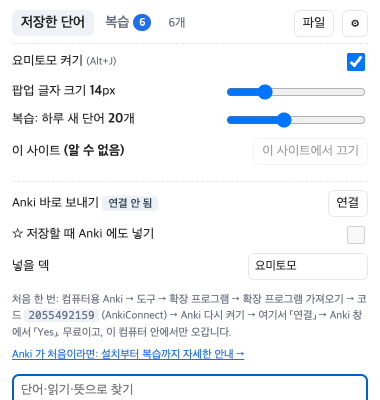
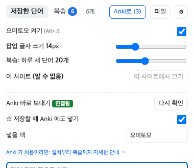
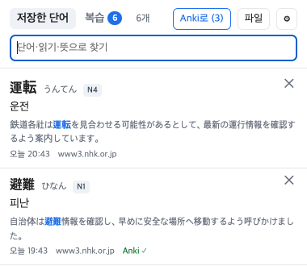

Anki 처음 쓰기
Anki 가 뭔지부터 설치, 요미토모와 연결, 컴퓨터와 폰에서 복습하기까지 순서대로 안내합니다. 처음이라면 15분쯤 걸려요. 전부 무료입니다(아이폰 앱만 예외, 아래 6번).
1Anki 가 뭔가요?
Anki(안키)는 단어장을 「카드」로 만들어 외우게 도와주는 무료 프로그램입니다. 전 세계 외국어·의대 공부하는 사람들이 많이 써요.
핵심은 간격 반복이에요. 카드를 보고 기억났는지 스스로 답하면, Anki 가 다음에 그 카드를 언제 다시 보여 줄지 정합니다. 잘 아는 카드는 며칠 → 몇 주 → 몇 달 뒤로 점점 멀리, 헷갈린 카드는 금방 다시. 그래서 매일 10~20분만 해도 외운 단어가 오래 남습니다.
알아 둘 말 네 개
| 말 | 뜻 | 요미토모에서는 |
|---|---|---|
| 카드 | 앞면(문제)과 뒷면(답)이 있는 한 장 | 앞면: 단어와 그 단어가 나온 문장 / 뒷면: 읽기·뜻·급수 |
| 덱 | 카드를 모아 둔 묶음(폴더 같은 것) | 「요미토모」 덱에 들어감 (이름은 바꿀 수 있음) |
| 확장 프로그램 | Anki 에 기능을 더하는 무료 추가 기능 (영어로 add-on) | 「AnkiConnect」를 하나 깔아야 요미토모가 카드를 넣을 수 있음 |
| 동기화 | 컴퓨터와 폰의 카드·기록을 맞추는 것 (무료 AnkiWeb 계정) | 컴퓨터로 넣은 카드를 폰에서 복습할 때 씀 |
꼭 Anki 를 써야 하나요?
요미토모 「복습」 탭으로 충분한 사람
- 컴퓨터 앞에서만 공부함
- 프로그램을 더 깔기 싫음
- 요미토모로 모은 단어만 외움
→ 확장 아이콘 → 「복습」 탭. Anki 는 안 깔아도 됩니다.
Anki 를 같이 쓰면 좋은 사람
- 폰에서 출퇴근길에 복습하고 싶음
- 이미 Anki 로 공부 중임
- 다른 사람이 만든 덱(JLPT 단어장 등)도 같이 쓰고 싶음
→ 아래 2~6번을 따라 하세요.
2Anki 설치하기 (컴퓨터)
요미토모와 연결하려면 컴퓨터용 Anki가 필요합니다. 공식 사이트 apps.ankiweb.net 에서만 받으세요. 무료입니다. 검색 광고에 나오는 비슷한 이름의 유료 앱은 공식이 아니에요.
맥
- 내 맥이 어떤 칩인지 확인: 화면 왼쪽 위 → → 「칩」이 Apple M… 이면 Apple Silicon, 「프로세서」가 Intel 이면 Intel.
- apps.ankiweb.net 에서 macOS 의 맞는 쪽(Apple Silicon 또는 Intel)을 눌러 내려받기 (.dmg 파일).
- 받은 파일을 열고, 나오는 창에서 Anki 아이콘을 응용 프로그램(Applications) 폴더로 끌어다 놓기.
- 응용 프로그램 폴더에서 Anki 를 더블클릭해 실행.
윈도우
- apps.ankiweb.net 에서 Windows 의 x64 를 눌러 내려받기 (대부분의 PC. ARM 노트북이면 ARM).
- 받은 설치 파일을 실행하고 「다음」을 눌러 설치.
- 시작 메뉴에서 Anki 실행.
3AnkiConnect 깔기 (처음 한 번)
AnkiConnect 는 다른 프로그램이 Anki 에 카드를 넣을 수 있게 해 주는 무료 확장 프로그램입니다. 요미토모 말고도 일본어 공부 도구들이 널리 씁니다.
맥: 메뉴는 Anki 창 안이 아니라 화면 맨 위 막대(사과 모양 옆)에 있어요. Anki 창을 한 번 눌러 두면 그 막대가 로 바뀝니다.
윈도우: Anki 창 맨 위 줄에 같은 메뉴가 있어요.
- 그 메뉴에서 를 누르고 → 을 고름.
- 열린 창에서 를 누름.
- 「코드:」 칸에 아래 숫자를 붙여 넣고 확인.
2055492159
(숫자를 누르면 한 번에 선택돼요. 복사해서 붙여 넣으세요.) - 목록에 AnkiConnect 가 생기면 Anki 를 완전히 껐다가 다시 켭니다. (맥: ⌘+Q 로 끄기)
http://127.0.0.1:8765 를 쳐서 「AnkiConnect」라는 글자가 보이면 성공입니다. 이 주소는 「내 컴퓨터 자신」을 뜻해요. 인터넷으로 나가지 않습니다.4요미토모와 연결하기
- Anki 를 켜 둔 채로, 크롬 오른쪽 위 요미토모 아이콘 → 창 오른쪽 위 ⚙.
- 「Anki 바로 보내기」 줄의 연결 을 누릅니다.
- 크롬이 「127.0.0.1 에 접근 허용?」을 물으면 허용. (Anki 와 이야기하려면 필요한, 이 컴퓨터 안의 주소예요.)
- Anki 창에 요미토모를 허용할지 묻는 창이 뜨면 Yes. 창이 안 보이면 Anki 가 다른 창 뒤에 있을 수 있어요(Dock·작업 표시줄의 Anki 아이콘 클릭).
- 요미토모에 연결됨 이 뜨면 끝. Anki 에 「요미토모」 덱과 「요미토모 단어」 카드 종류가 생깁니다.


이제 이렇게 씁니다
- 일본어 페이지에서 단어에 마우스를 올리고 ☆ (또는 S) → 요미토모에 저장되면서 Anki 덱에도 카드가 바로 들어갑니다. 팝업에 「Anki 에도 넣었어요」가 잠깐 떠요.
- Anki 가 꺼져 있었다면 「Anki 가 꺼져 있어요」가 뜨고 요미토모에만 저장됩니다. 나중에 Anki 를 켜고 요미토모 창 위의 Anki로 (숫자) 버튼을 누르면 한꺼번에 들어가요.
- 보낸 단어에는 목록에 Anki ✓ 가 붙습니다. 같은 덱에 이미 있는 단어는 두 번 넣지 않아요.
- 「☆ 저장할 때 Anki 에도 넣기」를 끄면, 모았다가 원할 때만 「Anki로」 버튼으로 보낼 수 있어요.

Anki 에 들어가는 카드 모양
앞면에서 단어와 문장을 보고 읽기·뜻을 떠올린 뒤, 뒤집어서 맞혔는지 확인하는 방식이에요. 단어를 처음 만났던 문장이 같이 나와서 기억이 잘 납니다.
5Anki 로 복습하기
- Anki 첫 화면의 덱 목록에서 요미토모 를 누름.
- 을 누르면 카드 앞면이 나옵니다.
- 읽기와 뜻을 떠올려 본 뒤 (또는 Space).
- 얼마나 잘 기억했는지 네 버튼 중 하나를 누릅니다. 버튼 위에 다음에 다시 볼 때까지의 시간이 적혀 있어요.
- 다시: 기억 안 남 → 몇 분 뒤 또 나옴
- 어려움: 겨우 떠올림 → 조금만 뒤에
- 알맞음: 떠올림 → 보통 간격 (대부분 이걸 누르게 됩니다)
- 쉬움: 너무 쉬움 → 훨씬 뒤에
6폰에서 복습하기
컴퓨터 Anki 에 들어간 카드를 폰으로 옮기려면 무료 AnkiWeb 계정으로 동기화합니다.
- ankiweb.net 에서 무료 계정 만들기 (이메일·비밀번호).
- 컴퓨터 Anki 첫 화면 오른쪽 위의 버튼(또는 Y) → AnkiWeb 이메일·비밀번호 입력.
- 처음 한 번 어느 쪽을 남길지 물으면, 컴퓨터에 카드가 있고 AnkiWeb 은 비어 있으니 업로드.
- 폰에 Anki 앱을 깔고 같은 계정으로 로그인 → 동기화.
안드로이드: AnkiDroid
무료. 구글 플레이에서 「AnkiDroid」.
아이폰·아이패드: AnkiMobile
유료(약 25달러, 나라마다 다름). Anki 를 만든 곳에서 파는 공식 앱이고, 이 돈이 Anki 개발비로 쓰입니다. 요미토모와는 관계없어요. 아이폰에서는 동기화 없이 AnkiWeb 사이트에서 브라우저로 복습할 수도 있습니다.
7AnkiConnect 없이 파일로 넣기
확장 프로그램을 깔기 싫거나 회사 컴퓨터라 안 될 때는 파일로 옮길 수 있어요.
- 요미토모 창 위의 파일 버튼 →
요미토모_단어_날짜.tsv가 다운로드 폴더에 저장됨. - Anki 에서 → → 그 파일 선택.
- 노트 유형은 「기본(Basic)」, 덱은 원하는 것으로 고르고 가져오기.
이 방법은 매번 직접 해야 하고, 같은 단어를 두 번 가져오면 중복될 수 있어요. 자주 쓴다면 3번의 AnkiConnect 를 추천합니다.
8안 될 때
「Anki 가 꺼져 있거나 AnkiConnect 가 없어요」가 떠요
- 컴퓨터에서 Anki 가 켜져 있는지 확인하세요(창을 닫아도 꺼진 건 아닐 수 있지만, 완전히 끄면 안 됩니다).
- → 목록에 AnkiConnect 가 있는지 확인. 없으면 3번을 다시.
- 방금 깔았다면 Anki 를 완전히 껐다 켜기.
- 3번의 「잘 깔렸는지 보는 법」 주소가 열리는지 확인.
「연결」을 눌렀는데 Anki 에 질문 창이 안 떠요
Anki 창이 다른 창 뒤에 가려져 있는 경우가 많아요. Dock(맥)이나 작업 표시줄(윈도우)의 Anki 아이콘을 눌러 앞으로 가져온 뒤 확인해 보세요.
실수로 Anki 창에서 「No」를 눌렀어요
요미토모에서 「연결」을 다시 누르면 보통 다시 물어봅니다. 다시 안 묻는다면 「다시 묻지 않기」를 고른 경우예요.
Anki 에서 → → AnkiConnect 선택 → 을 열고,
ignoreOriginList 안에 있는 chrome-extension://… 줄을 지운 뒤 저장 → Anki 다시 켜기 → 「연결」.
맥에서 Anki 를 뒤에 오래 두면 보내기가 느리거나 실패해요
맥은 화면에 안 보이는 프로그램을 잠재워 전기를 아낍니다(App Nap). Anki 창을 한 번 앞으로 가져오면 다시 빨라져요. 매번 그렇다면, 터미널에서 아래 한 줄을 실행하고 Anki 를 다시 켜면 Anki 가 잠들지 않습니다.
defaults write net.ankiweb.dtop NSAppSleepDisabled -bool true
☆ 를 눌렀는데 Anki 에 안 들어갔어요
- 설정의 「☆ 저장할 때 Anki 에도 넣기」가 켜져 있는지 확인.
- 같은 덱에 이미 같은 단어 카드가 있으면 두 번 넣지 않아요(목록에는 Anki ✓ 로 표시).
- Anki 가 꺼져 있었다면 요미토모 창 위 「Anki로」 버튼으로 다시 보내세요.
요미토모에서 저장을 취소하면 Anki 카드도 지워지나요?
아니요. Anki 에 들어간 카드는 Anki 에서 직접 지워야 합니다(공부 중 카드 화면 오른쪽 아래 버튼에서 노트 삭제, 또는 위쪽 메뉴의 찾아보기 창에서 삭제. 영어 화면: More → Delete Note / Browse). 실수로 공부 기록을 잃지 않게 일부러 그렇게 했어요.
덱 이름을 바꾸거나, 일본어 덱 안에 넣고 싶어요
요미토모 설정의 「넣을 덱」에 원하는 이름을 쓰세요. 일본어::요미토모 처럼 :: 를 쓰면 「일본어」 덱 안의 「요미토모」 덱이 됩니다. 이미 넣은 카드는 Anki 에서 덱을 옮겨야 해요.
카드 글자 크기나 모양을 바꾸고 싶어요
Anki 의 → 노트 유형 관리(Manage Note Types) → 「요미토모 단어」 → 카드(Cards) 에서 바꿀 수 있어요. 잘 모르겠다면 그대로 두는 게 안전합니다.